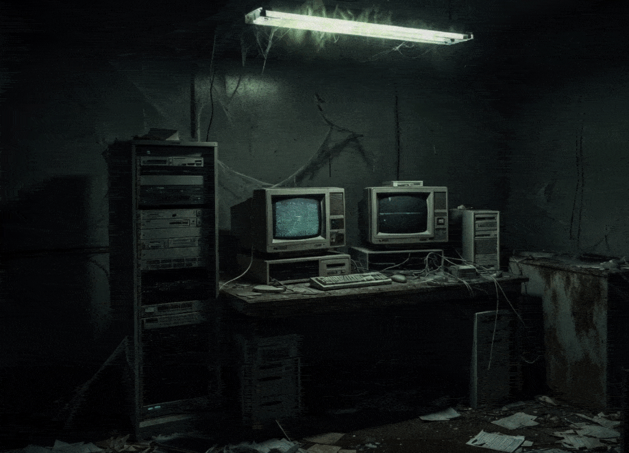
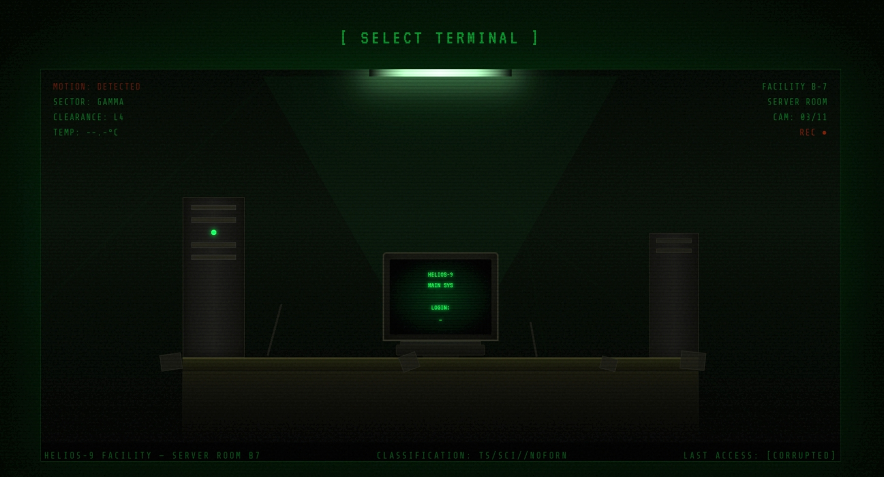
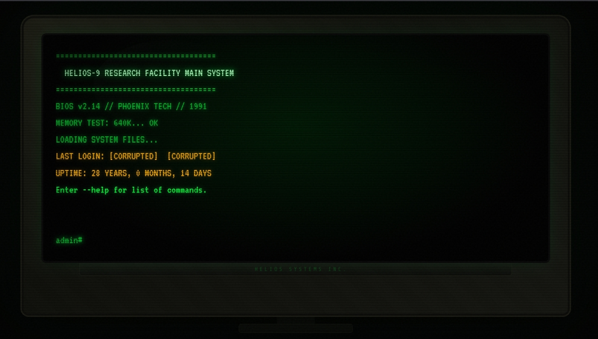

HELIOS-9
Protagonist's father used to work in a secret research facility. He (along with other researchers and workers in the facility) went missing when the protagonist was six years old. No one knows what happened to them. The government covered up the whole thing. The facility was permanently sealed and still know one knew what resesarch was being conducted there. Currently, the protagonist is 34, and a system analyst, who has secretly crept into the facility to uncover the truth. Explore the main system, read logs and reports, and uncover the eerie truth.

